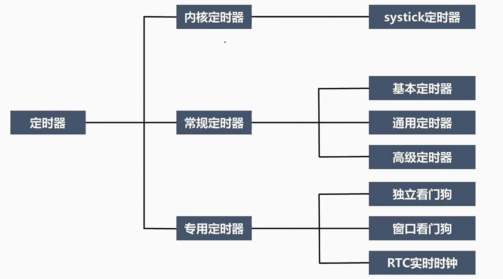
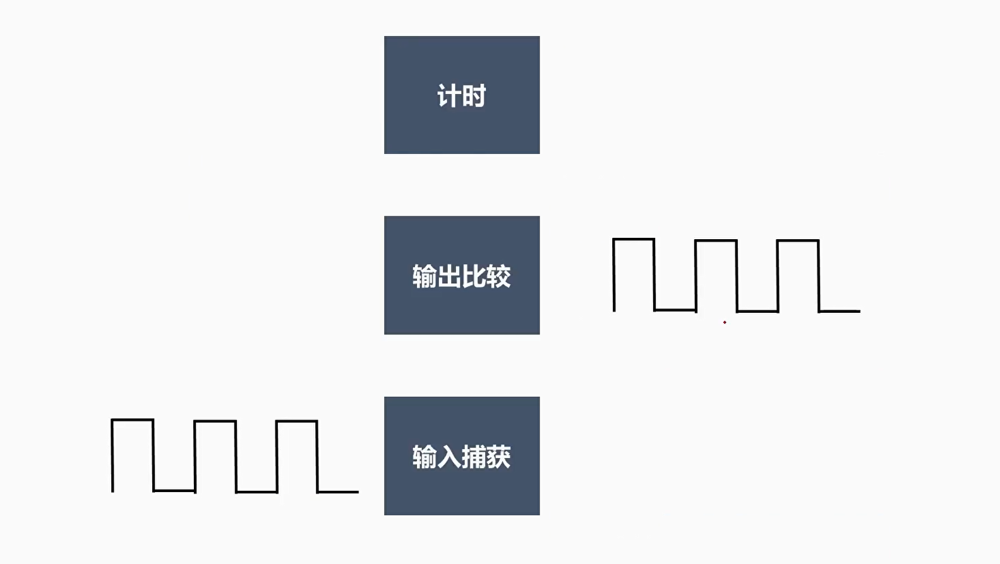
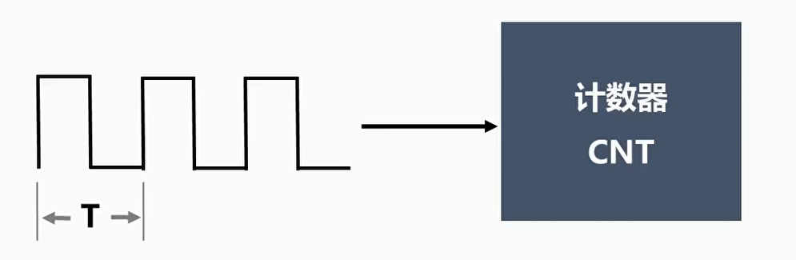
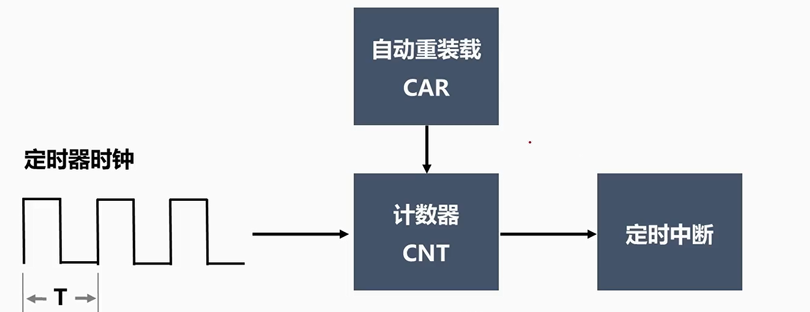
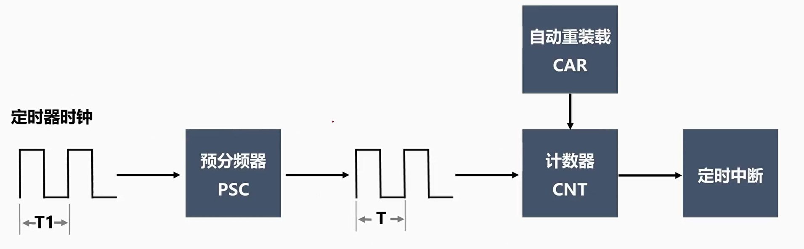
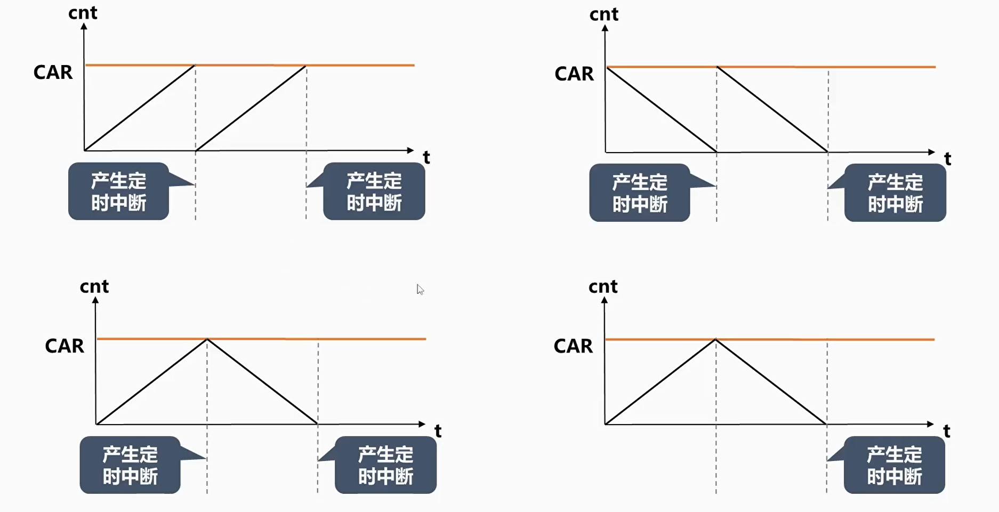
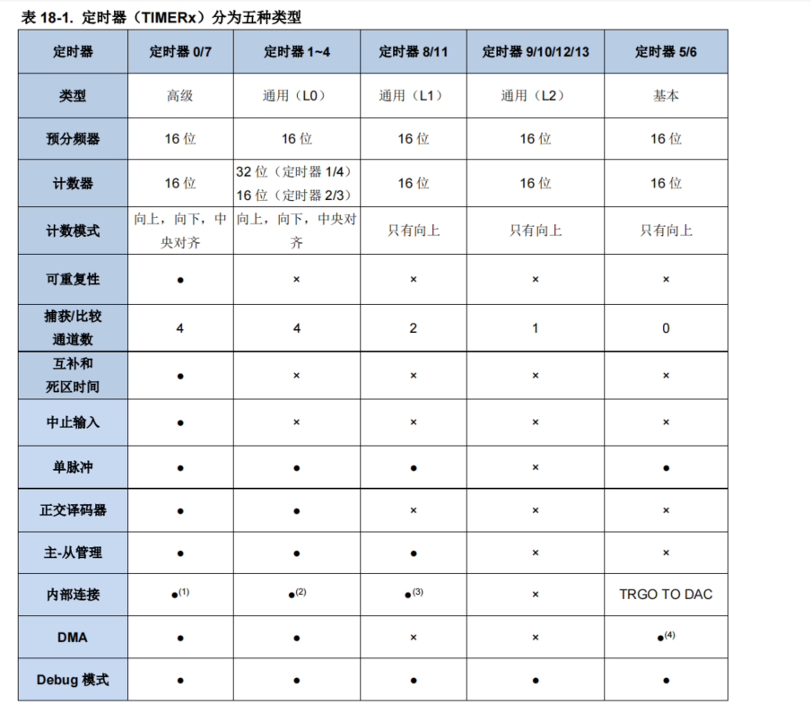

<!DOCTYPE lake>
<h1 data-lake-id="jPFks" id="jPFks"><span data-lake-id="uc46e7f8c" id="uc46e7f8c">ARM32单片机定时器</span></h1><p data-lake-id="u067445c0" id="u067445c0"></p><h1 data-lake-id="wg7vn" id="wg7vn"><span data-lake-id="u08e0b2f6" id="u08e0b2f6">定时器概述</span></h1><p data-lake-id="uc594da3b" id="uc594da3b"><span class="lake-fontsize-12" data-lake-id="u36af6ed7" id="u36af6ed7">定时器是嵌入式系统中常用的一种外设，它可以产生一定的时间间隔、延时、定时等功能，广泛应用于定时、计数、脉冲宽度调制(PWM)等领域。</span></p><p data-lake-id="ud4e8ce86" id="ud4e8ce86"><span class="lake-fontsize-12" data-lake-id="u804b8eb3" id="u804b8eb3">​</span><br/></p><p data-lake-id="uf312bcf9" id="uf312bcf9"><span class="lake-fontsize-12" data-lake-id="u3bc14d80" id="u3bc14d80">具体而言，定时器可以实现以下功能：</span></p><ol list="ufc2d5f3e"><li data-lake-id="u3f0f6db5" fid="u5e3bd62c" id="u3f0f6db5"><span class="lake-fontsize-12" data-lake-id="u20203797" id="u20203797">计时：定时器可以用来实现延时操作，例如等待外部设备的稳定、等待数据的接收等，也可以用来定时执行一些任务，例如周期性任务、定时采集数据等。</span></li><li data-lake-id="ue9460f4a" fid="u5e3bd62c" id="ue9460f4a"><span class="lake-fontsize-12" data-lake-id="ucb2db75f" id="ucb2db75f">计数：定时器可以用来实现计数功能，例如计数外部事件的次数、计算脉冲信号的频率等。</span></li><li data-lake-id="ufda45783" fid="u5e3bd62c" id="ufda45783"><span class="lake-fontsize-12" data-lake-id="u3aeabe36" id="u3aeabe36">PWM输出：定时器可以用来产生PWM信号，通过调节占空比可以实现各种功能，例如LED调光、舵机控制等。</span></li><li data-lake-id="u9eee6a05" fid="u5e3bd62c" id="u9eee6a05"><span class="lake-fontsize-12" data-lake-id="ue91104a5" id="ue91104a5">中断控制：定时器通常具有中断功能，可以在计数器计数到一定值时触发中断，以实现各种复杂的功能。</span></li></ol><p data-lake-id="ueffef800" id="ueffef800"></p><h1 data-lake-id="AASKq" id="AASKq"><span data-lake-id="u0f03209c" id="u0f03209c">定时器的基本原理</span></h1><p data-lake-id="u2f0547ef" id="u2f0547ef"><strong><span data-lake-id="u2305cd99" id="u2305cd99">定时器本质上就是一个电子计数器</span></strong></p><p data-lake-id="ufde7dfbf" id="ufde7dfbf"></p><p data-lake-id="u68829b52" id="u68829b52"><strong><span data-lake-id="u7b99b43a" id="u7b99b43a">定时器计时上限</span></strong></p><p data-lake-id="u41abe9e8" id="u41abe9e8"></p><p data-lake-id="u0619f1ed" id="u0619f1ed"><strong><span data-lake-id="u23a720ab" id="u23a720ab">预分频器</span></strong></p><p data-lake-id="u8bb4573b" id="u8bb4573b"></p><p data-lake-id="u9a8c97c9" id="u9a8c97c9"><strong><span data-lake-id="ue7855970" id="ue7855970">计数模式</span></strong></p><p data-lake-id="u6a66429e" id="u6a66429e"></p><h1 data-lake-id="B2GKM" id="B2GKM"><span data-lake-id="u2690f6ca" id="u2690f6ca">GD32F4的定时器</span></h1><p data-lake-id="u7aae8101" id="u7aae8101"><span data-lake-id="ufe8ef9aa" id="ufe8ef9aa" style="color: rgb(52, 73, 94)"> </span><span class="lake-fontsize-12" data-lake-id="ud65c76cf" id="ud65c76cf">GD32F450ZGT6一共有14个定时器，可以分为五种类型，高级定时器0/7、通用定时器(L0)1-4、通用定时器(L1)8/11、通用定时器(L2)9/10/12/13和基本定时器5/6。不同类型的定时器所拥有的功能数量不同，一般高级定时器的功能最多，通用定时器次之，基本定时器功能最少。具体功能对照可以查看用户手册的第348页。</span></p><p data-lake-id="u78d5c5bb" id="u78d5c5bb"></p><h2 data-lake-id="LdxuY" id="LdxuY"><span data-lake-id="u269d774e" id="u269d774e">高级定时器</span></h2><p data-lake-id="u6ebd820f" id="u6ebd820f"><span class="lake-fontsize-12" data-lake-id="u6bde2531" id="u6bde2531">高级定时器（TIMER0 和 TIMER7）是四通道定时器，支持输入捕获和输出比较。可以产生 PWM </span></p><p data-lake-id="u112c8aa0" id="u112c8aa0"><span class="lake-fontsize-12" data-lake-id="ufe8a80ab" id="ufe8a80ab">信号控制电机和电源管理。高级定时器含有一个 </span><span class="lake-fontsize-12" data-lake-id="u30e3fb70" id="u30e3fb70">16 </span><span class="lake-fontsize-12" data-lake-id="u96e656b8" id="u96e656b8">位无符号计数器。 </span></p><p data-lake-id="uc5b18e17" id="uc5b18e17"><span class="lake-fontsize-12" data-lake-id="u581649b8" id="u581649b8">高级定时器是可编程的，可以被用来计数，其外部事件可以驱动其他定时器 </span></p><p data-lake-id="ufd18618c" id="ufd18618c"><span class="lake-fontsize-12" data-lake-id="u2907a283" id="u2907a283">高级定时器包含了一个死区时间插入模块，非常适合电机控制。</span></p><h2 data-lake-id="SSBTs" id="SSBTs"><span data-lake-id="uafe16919" id="uafe16919">通用定时器L0</span></h2><p data-lake-id="ufd92a6af" id="ufd92a6af"><span class="lake-fontsize-12" data-lake-id="u4ce92526" id="u4ce92526">通用定时器 L0 是 4 通道定时器，支持输入捕获，输出比较，产生 PWM 信号控制电机和电源 </span></p><p data-lake-id="u9c4e186a" id="u9c4e186a"><span class="lake-fontsize-12" data-lake-id="ua05e7620" id="ua05e7620">管理。通用定时器 </span><span class="lake-fontsize-12" data-lake-id="u3f5a03f4" id="u3f5a03f4">L0 </span><span class="lake-fontsize-12" data-lake-id="u895eb89f" id="u895eb89f">计数器是 </span><span class="lake-fontsize-12" data-lake-id="ube75e85b" id="ube75e85b">16 </span><span class="lake-fontsize-12" data-lake-id="ue6a890a8" id="ue6a890a8">位无符号计数器。 </span></p><p data-lake-id="uaf7254b9" id="uaf7254b9"><span class="lake-fontsize-12" data-lake-id="u9d401b3c" id="u9d401b3c">通用定时器是可编程的，可以被用来计数，其外部事件可以驱动其他定时器。</span></p><h2 data-lake-id="Y2OH6" id="Y2OH6"><span data-lake-id="ud879bee8" id="ud879bee8">通用定时器L1 </span></h2><p data-lake-id="u0ab3764e" id="u0ab3764e"><span class="lake-fontsize-12" data-lake-id="u002f6478" id="u002f6478">通用定时器 L1（Timer8, 11）是两通道定时器，支持输入捕获和输出比较，可以产生 PWM 信 </span></p><p data-lake-id="ue62b1911" id="ue62b1911"><span class="lake-fontsize-12" data-lake-id="ucd498f40" id="ucd498f40">号控制电机和电源管理。通用定时器 </span><span class="lake-fontsize-12" data-lake-id="uc4f97948" id="uc4f97948">L1 </span><span class="lake-fontsize-12" data-lake-id="u43b6632a" id="u43b6632a">含有一个 </span><span class="lake-fontsize-12" data-lake-id="u1fe3b707" id="u1fe3b707">16 </span><span class="lake-fontsize-12" data-lake-id="ud5474cb5" id="ud5474cb5">位无符号计数器。 </span></p><p data-lake-id="u7342cdf6" id="u7342cdf6"><span class="lake-fontsize-12" data-lake-id="ud6f738e0" id="ud6f738e0">通用定时器是可编程的，可以被用来计数，其外部事件可以驱动其他定时器</span></p><h2 data-lake-id="NQdwI" id="NQdwI"><span data-lake-id="u758fb92d" id="u758fb92d">通用定时器L2</span></h2><p data-lake-id="ue4a9796f" id="ue4a9796f"><span class="lake-fontsize-12" data-lake-id="ub4961a12" id="ub4961a12">通用定时器 L2（TIMERx, x=9, 10, 12, 13）是单通道定时器，支持输入捕获和输出比较，产生 </span></p><p data-lake-id="uf9a6ca60" id="uf9a6ca60"><span class="lake-fontsize-12" data-lake-id="u049a97d9" id="u049a97d9">PWM </span><span class="lake-fontsize-12" data-lake-id="u9e55551c" id="u9e55551c">信号控制电机和电源管理。通用定时器 </span><span class="lake-fontsize-12" data-lake-id="u22eee2df" id="u22eee2df">L2 </span><span class="lake-fontsize-12" data-lake-id="u3b2d5191" id="u3b2d5191">含有一个 </span><span class="lake-fontsize-12" data-lake-id="u12d8ebf9" id="u12d8ebf9">16 </span><span class="lake-fontsize-12" data-lake-id="u6900ad4c" id="u6900ad4c">位无符号计数器。 </span></p><p data-lake-id="uc1431770" id="uc1431770"><span class="lake-fontsize-12" data-lake-id="u48a69551" id="u48a69551">通用定时器是可编程的，可以被用来计数，其外部事件可以驱动其他定时器</span></p><h2 data-lake-id="yXoHR" id="yXoHR"><span data-lake-id="uadfbbb54" id="uadfbbb54">基本定时器</span></h2><p data-lake-id="u5aadadb6" id="u5aadadb6"><span class="lake-fontsize-12" data-lake-id="ud0e4a76b" id="ud0e4a76b" style="color: rgb(0,0,0)">基本定时器（Timer5, 6）包含一个无符号 16 位计数器。</span></p><p data-lake-id="u611f3bef" id="u611f3bef"><br/></p><p data-lake-id="uf3946428" id="uf3946428"><br/></p>